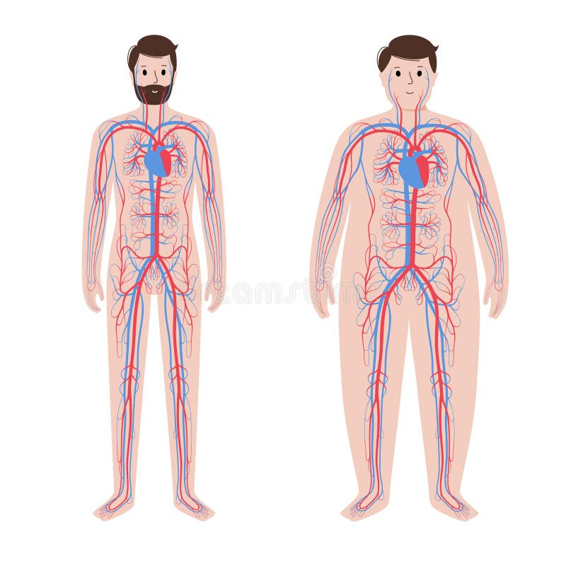
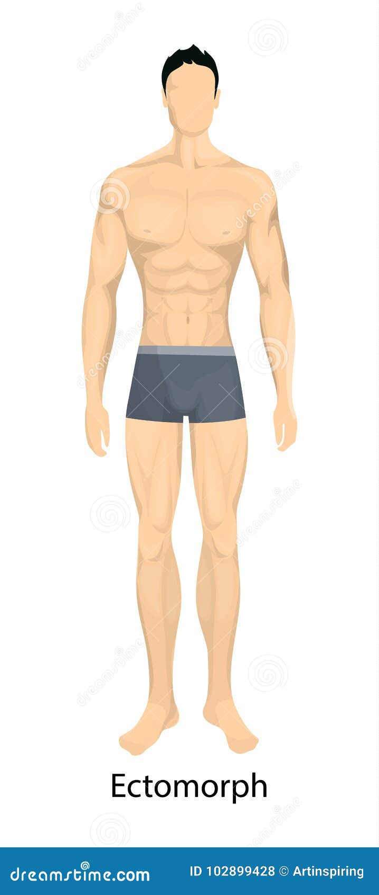

<!DOCTYPE html>
<html lang="ca">
<head>
    <meta charset="UTF-8">
    <meta name="viewport" content="width=device-width, initial-scale=1.0">
    <title>El Transport de Substàncies al Cos Humà</title>
    <style>
        @import url('https://fonts.googleapis.com/css2?family=Montserrat:wght@300;400;600;700;900&display=swap');

        * {
            margin: 0;
            padding: 0;
            box-sizing: border-box;
        }

        body {
            font-family: 'Montserrat', sans-serif;
            overflow: hidden;
            background: #0a0a0a;
            height: 100vh;
            cursor: pointer;
        }

        /* Contenidor */
        .presentation-container {
            width: 100%;
            height: 100vh;
            position: relative;
        }

        /* Diapositiva */
        .slide {
            width: 100%;
            height: 100vh;
            position: absolute;
            top: 0;
            left: 0;
            display: none;
            opacity: 0;
        }

        .slide.active {
            display: block;
            animation: slideEnter 0.8s cubic-bezier(0.68, -0.55, 0.265, 1.55) forwards;
        }

        @keyframes slideEnter {
            from {
                opacity: 0;
                transform: scale(0.8) rotateY(90deg);
            }
            to {
                opacity: 1;
                transform: scale(1) rotateY(0deg);
            }
        }

        .slide.exit {
            animation: slideExit 0.6s ease forwards;
        }

        @keyframes slideExit {
            from {
                opacity: 1;
                transform: scale(1);
            }
            to {
                opacity: 0;
                transform: scale(0.8) translateX(-200px);
            }
        }

        /* Fons amb gradient animat */
        .slide-bg {
            position: absolute;
            width: 100%;
            height: 100%;
            z-index: 0;
        }

        .bg-red-blue {
            background: linear-gradient(135deg, #8B0000 0%, #1e1e3f 100%);
        }

        .bg-blue-red {
            background: linear-gradient(135deg, #1e1e3f 0%, #8B0000 100%);
        }

        .bg-dark-red {
            background: linear-gradient(135deg, #0a0a0a 0%, #4a0000 50%, #0a0a0a 100%);
        }

        .bg-dark-blue {
            background: linear-gradient(135deg, #0a0a0a 0%, #000d4a 50%, #0a0a0a 100%);
        }

        .bg-split {
            background: linear-gradient(90deg, #8B0000 0%, #8B0000 50%, #1e3a8a 50%, #1e3a8a 100%);
        }

        /* Contingut */
        .slide-content {
            position: relative;
            z-index: 1;
            width: 100%;
            height: 100%;
            display: flex;
            flex-direction: column;
            justify-content: center;
            align-items: center;
            padding: 80px;
        }

        /* Títols */
        .slide-title {
            font-size: 4.5rem;
            font-weight: 900;
            color: #ffffff;
            text-align: center;
            margin-bottom: 40px;
            text-transform: uppercase;
            letter-spacing: 5px;
            animation: titleReveal 1s ease forwards;
            text-shadow: 0 10px 40px rgba(0, 0, 0, 0.8);
        }

        @keyframes titleReveal {
            from {
                opacity: 0;
                transform: translateY(-50px) scale(0.9);
            }
            to {
                opacity: 1;
                transform: translateY(0) scale(1);
            }
        }

        .slide-subtitle {
            font-size: 2rem;
            font-weight: 300;
            color: #e0e0e0;
            text-align: center;
            margin-bottom: 60px;
            animation: subtitleReveal 1s ease 0.3s forwards;
            opacity: 0;
        }

        @keyframes subtitleReveal {
            from {
                opacity: 0;
                transform: translateY(30px);
            }
            to {
                opacity: 1;
                transform: translateY(0);
            }
        }

        /* Text gran */
        .big-text {
            font-size: 5rem;
            font-weight: 900;
            color: #DC143C;
            text-align: center;
            line-height: 1.2;
            animation: bigTextPulse 2s ease infinite;
        }

        @keyframes bigTextPulse {
            0%, 100% { transform: scale(1); }
            50% { transform: scale(1.05); }
        }

        /* Llista de punts elegant */
        .elegant-list {
            list-style: none;
            padding: 0;
            max-width: 900px;
            margin: 0 auto;
        }

        .elegant-list li {
            font-size: 1.8rem;
            color: #ffffff;
            margin-bottom: 30px;
            padding-left: 60px;
            position: relative;
            opacity: 0;
            animation: listItemAppear 0.6s ease forwards;
        }

        .elegant-list li:nth-child(1) { animation-delay: 0.4s; }
        .elegant-list li:nth-child(2) { animation-delay: 0.6s; }
        .elegant-list li:nth-child(3) { animation-delay: 0.8s; }
        .elegant-list li:nth-child(4) { animation-delay: 1s; }
        .elegant-list li:nth-child(5) { animation-delay: 1.2s; }

        @keyframes listItemAppear {
            from {
                opacity: 0;
                transform: translateX(-100px);
            }
            to {
                opacity: 1;
                transform: translateX(0);
            }
        }

        .elegant-list li::before {
            content: "";
            position: absolute;
            left: 0;
            top: 50%;
            transform: translateY(-50%);
            width: 40px;
            height: 4px;
            background: linear-gradient(90deg, #DC143C 0%, #1e3a8a 100%);
        }

        /* Layout dos columnes */
        .two-columns {
            display: grid;
            grid-template-columns: 1fr 1fr;
            gap: 60px;
            width: 100%;
            max-width: 1400px;
        }

        .column {
            animation: columnSlide 0.8s ease forwards;
            opacity: 0;
        }

        .column:nth-child(1) {
            animation-delay: 0.4s;
        }

        .column:nth-child(2) {
            animation-delay: 0.6s;
        }

        @keyframes columnSlide {
            from {
                opacity: 0;
                transform: translateY(50px);
            }
            to {
                opacity: 1;
                transform: translateY(0);
            }
        }

        .column h3 {
            font-size: 2.5rem;
            color: #DC143C;
            margin-bottom: 30px;
            font-weight: 700;
        }

        .column p {
            font-size: 1.3rem;
            color: #d0d0d0;
            line-height: 1.8;
        }

        /* Números grans */
        .big-number {
            font-size: 12rem;
            font-weight: 900;
            color: rgba(220, 20, 60, 0.3);
            position: absolute;
            top: 50%;
            left: 50%;
            transform: translate(-50%, -50%);
            z-index: 0;
            animation: numberRotate 20s linear infinite;
        }

        @keyframes numberRotate {
            from { transform: translate(-50%, -50%) rotate(0deg); }
            to { transform: translate(-50%, -50%) rotate(360deg); }
        }

        /* Caixa de destacat */
        .highlight-box {
            background: linear-gradient(135deg, rgba(220, 20, 60, 0.2) 0%, rgba(30, 58, 138, 0.2) 100%);
            border: 2px solid #DC143C;
            padding: 40px;
            border-radius: 20px;
            margin: 40px 0;
            animation: boxGlow 2s ease infinite;
        }

        @keyframes boxGlow {
            0%, 100% { box-shadow: 0 0 20px rgba(220, 20, 60, 0.3); }
            50% { box-shadow: 0 0 40px rgba(220, 20, 60, 0.6); }
        }

        .highlight-box h4 {
            font-size: 2rem;
            color: #ffffff;
            margin-bottom: 20px;
        }

        .highlight-box p {
            font-size: 1.4rem;
            color: #e0e0e0;
            line-height: 1.7;
        }

        /* Imatges */
        .slide-image {
            max-width: 100%;
            height: auto;
            border-radius: 20px;
            box-shadow: 0 20px 60px rgba(220, 20, 60, 0.4);
            animation: imageZoomIn 1.2s ease-out;
            object-fit: contain;
        }

        .slide-image.centered {
            display: block;
            margin: 40px auto;
            max-height: 700px;
        }

        .slide-image.float-right {
            float: right;
            max-width: 45%;
            margin-left: 40px;
            margin-bottom: 20px;
        }

        .slide-image.float-left {
            float: left;
            max-width: 45%;
            margin-right: 40px;
            margin-bottom: 20px;
        }

        @keyframes imageZoomIn {
            from {
                opacity: 0;
                transform: scale(0.85) rotate(-5deg);
            }
            to {
                opacity: 1;
                transform: scale(1) rotate(0deg);
            }
        }

        .two-columns.image-text {
            align-items: center;
        }

        /* Grid de dades */
        .data-grid {
            display: grid;
            grid-template-columns: repeat(3, 1fr);
            gap: 30px;
            margin-top: 60px;
        }

        .data-item {
            background: rgba(255, 255, 255, 0.05);
            padding: 40px;
            border-radius: 20px;
            border: 2px solid transparent;
            transition: all 0.4s ease;
            animation: dataItemFade 0.8s ease forwards;
            opacity: 0;
        }

        .data-item:nth-child(1) { animation-delay: 0.5s; }
        .data-item:nth-child(2) { animation-delay: 0.7s; }
        .data-item:nth-child(3) { animation-delay: 0.9s; }
        .data-item:nth-child(4) { animation-delay: 1.1s; }
        .data-item:nth-child(5) { animation-delay: 1.3s; }
        .data-item:nth-child(6) { animation-delay: 1.5s; }

        @keyframes dataItemFade {
            from {
                opacity: 0;
                transform: scale(0.8);
            }
            to {
                opacity: 1;
                transform: scale(1);
            }
        }

        .data-item:hover {
            border-color: #DC143C;
            background: rgba(220, 20, 60, 0.1);
            transform: translateY(-10px);
        }

        .data-item h5 {
            font-size: 3rem;
            color: #DC143C;
            font-weight: 900;
            margin-bottom: 15px;
        }

        .data-item p {
            font-size: 1.2rem;
            color: #d0d0d0;
        }

        /* Pantalla de benvinguda */
        .welcome-screen {
            width: 100%;
            height: 100vh;
            display: flex;
            flex-direction: column;
            align-items: center;
            justify-content: center;
            background: linear-gradient(135deg, #8B0000 0%, #0a0a0a 50%, #1e3a8a 100%);
            background-size: 200% 200%;
            animation: gradientMove 8s ease infinite;
        }

        @keyframes gradientMove {
            0%, 100% { background-position: 0% 50%; }
            50% { background-position: 100% 50%; }
        }

        .welcome-title {
            font-size: 5rem;
            font-weight: 900;
            color: #ffffff;
            text-align: center;
            margin-bottom: 40px;
            animation: welcomeTitle 1.5s cubic-bezier(0.68, -0.55, 0.265, 1.55) forwards;
            text-transform: uppercase;
            letter-spacing: 8px;
        }

        @keyframes welcomeTitle {
            from {
                opacity: 0;
                transform: scale(0) rotate(-180deg);
            }
            to {
                opacity: 1;
                transform: scale(1) rotate(0deg);
            }
        }

        .welcome-subtitle {
            font-size: 1.8rem;
            color: #e0e0e0;
            margin-bottom: 60px;
            animation: welcomeSubtitle 1s ease 0.5s forwards;
            opacity: 0;
        }

        @keyframes welcomeSubtitle {
            from {
                opacity: 0;
                transform: translateY(50px);
            }
            to {
                opacity: 1;
                transform: translateY(0);
            }
        }

        .authors {
            font-size: 1.3rem;
            color: #d0d0d0;
            margin-bottom: 80px;
            animation: authorsAppear 1s ease 1s forwards;
            opacity: 0;
        }

        .click-instruction {
            font-size: 1.5rem;
            color: #DC143C;
            animation: clickPulse 1.5s ease infinite;
        }

        @keyframes clickPulse {
            0%, 100% { opacity: 0.5; transform: scale(1); }
            50% { opacity: 1; transform: scale(1.1); }
        }

        @keyframes authorsAppear {
            from {
                opacity: 0;
            }
            to {
                opacity: 1;
            }
        }

        /* Indicador de diapositiva */
        .slide-indicator {
            position: fixed;
            bottom: 40px;
            right: 40px;
            font-size: 1.5rem;
            color: rgba(255, 255, 255, 0.5);
            font-weight: 600;
            z-index: 1000;
        }

        /* Formes decoratives */
        .shape-circle {
            position: absolute;
            border-radius: 50%;
            opacity: 0.1;
            animation: shapeFloat 10s ease-in-out infinite;
        }

        .shape-1 {
            width: 300px;
            height: 300px;
            background: #DC143C;
            top: 10%;
            left: 10%;
        }

        .shape-2 {
            width: 200px;
            height: 200px;
            background: #1e3a8a;
            bottom: 15%;
            right: 15%;
            animation-delay: -5s;
        }

        @keyframes shapeFloat {
            0%, 100% { transform: translate(0, 0) rotate(0deg); }
            33% { transform: translate(30px, -30px) rotate(120deg); }
            66% { transform: translate(-20px, 20px) rotate(240deg); }
        }

        /* Responsive */
        @media (max-width: 1200px) {
            .slide-title { font-size: 3.5rem; }
            .elegant-list li { font-size: 1.5rem; }
            .two-columns { grid-template-columns: 1fr; gap: 40px; }
            .data-grid { grid-template-columns: repeat(2, 1fr); }
        }

        @media (max-width: 768px) {
            .slide-content { padding: 40px; }
            .slide-title { font-size: 2.5rem; letter-spacing: 3px; }
            .elegant-list li { font-size: 1.2rem; }
            .data-grid { grid-template-columns: 1fr; }
        }
    </style>
</head>
<body>
    <div class="presentation-container"></div>

    <script>
// Presentació elegant amb 20 diapositives - El Transport de Substàncies al Cos Humà
const slidesData = [
    // Diapositiva 1: Portada
    {
        bgClass: "bg-red-blue",
        content: `
            <div class="slide-bg bg-red-blue"></div>
            <div class="shape-circle shape-1"></div>
            <div class="shape-circle shape-2"></div>
            <div class="slide-content">
                <h1 class="slide-title">El Transport de Substàncies</h1>
                <p class="slide-subtitle">Al Cos Humà</p>
                <div class="highlight-box" style="max-width: 700px;">
                    <p style="font-size: 1.5rem; color: #ffffff;">Una exploració fascinant del sistema circulatori i limfàtic</p>
                </div>
                <div style="margin-top: 50px; font-size: 1.4rem; color: #d0d0d0;">
                    <p>Aissa Rousi • Ivan Rios • Roger Omegna</p>
                    <p style="margin-top: 10px;">Unai Jimenez • Yeremi Suarez</p>
                </div>
            </div>
        `
    },

    // Diapositiva 2: El Cor - Òrgan Central
    {
        bgClass: "bg-dark-red",
        content: `
            <div class="slide-bg bg-dark-red"></div>
            <div class="big-number">1</div>
            <div class="slide-content">
                <h1 class="slide-title">El Cor</h1>
                <p class="slide-subtitle">La bomba vital del cos humà</p>
                <div class="two-columns">
                    <div class="column">
                        <h3>Anatomia del Cor</h3>
                        <p>El cor és un múscul incansable format per quatre cambres: dues aurícules superiors que reben la sang, i dos ventricles inferiors que la bombegen.</p>
                        <p style="margin-top: 20px;">Aquest òrgan extraordinari batega més de 100.000 vegades al dia, sense parar mai durant tota la nostra vida.</p>
                    </div>
                    <div class="column">
                        <h3>Dades Impressionants</h3>
                        <p>Bombeja 7.000 litres de sang cada dia, l'equivalent a omplir una petita piscina setmanalment.</p>
                        <p style="margin-top: 20px;">En una vida de 80 anys, el cor haurà batut més de 3.000 milions de vegades.</p>
                    </div>
                </div>
            </div>
        `
    },

    // Diapositiva 3: Sistema Circulatori
    {
        bgClass: "bg-blue-red",
        content: `
            <div class="slide-bg bg-blue-red"></div>
            <div class="slide-content">
                <h1 class="slide-title">Sistema Circulatori</h1>
                <p class="slide-subtitle">Una xarxa complexa de transport</p>
                <div class="two-columns image-text">
                    <div class="column">
                        
                    </div>
                    <div class="column">
                        <ul class="elegant-list" style="max-width: 100%;">
                            <li>Circulació pulmonar: transport de sang desoxigenada als pulmons</li>
                            <li>Circulació sistèmica: distribució de sang oxigenada per tot el cos</li>
                            <li>100.000 quilòmetres de vasos sanguinis en total</li>
                            <li>Circuit complet en menys d'un minut</li>
                        </ul>
                    </div>
                </div>
            </div>
        `
    },

    // Diapositiva 4: La Sang - Composició
    {
        bgClass: "bg-split",
        content: `
            <div class="slide-bg bg-split"></div>
            <div class="big-number">55%</div>
            <div class="slide-content">
                <h1 class="slide-title">La Sang</h1>
                <p class="slide-subtitle">El fluid vital del transport</p>
                <div class="data-grid">
                    <div class="data-item">
                        <h5>Plasma</h5>
                        <p>Part líquida (55%)</p>
                    </div>
                    <div class="data-item">
                        <h5>Glòbuls Vermells</h5>
                        <p>Eritròcits (44%)</p>
                    </div>
                    <div class="data-item">
                        <h5>Glòbuls Blancs</h5>
                        <p>Leucòcits (defensa)</p>
                    </div>
                    <div class="data-item">
                        <h5>Plaquetes</h5>
                        <p>Coagulació sanguínia</p>
                    </div>
                    <div class="data-item">
                        <h5>Proteïnes</h5>
                        <p>Albúmina, fibrinogen</p>
                    </div>
                    <div class="data-item">
                        <h5>Nutrients</h5>
                        <p>Glucosa, aminoàcids</p>
                    </div>
                </div>
            </div>
        `
    },

    // Diapositiva 5: Glòbuls Vermells
    {
        bgClass: "bg-dark-red",
        content: `
            <div class="slide-bg bg-dark-red"></div>
            <div class="slide-content">
                <h1 class="slide-title">Glòbuls Vermells</h1>
                <p class="slide-subtitle">Els transportadors d'oxigen</p>
                <div class="two-columns">
                    <div class="column">
                        <h3>Estructura</h3>
                        <p>Forma de disc bicòncau que maximitza la superfície per l'intercanvi de gasos.</p>
                        <p style="margin-top: 20px;">Contenen hemoglobina, una proteïna que es lliga a l'oxigen.</p>
                    </div>
                    <div class="column">
                        <h3>Producció</h3>
                        <p>El cos produeix 2,4 milions de glòbuls vermells per segon.</p>
                        <p style="margin-top: 20px;">Cada eritròcit viu aproximadament 120 dies abans de ser reemplaçat.</p>
                    </div>
                </div>
                <div class="highlight-box" style="margin-top: 40px;">
                    <h4>Curiositat</h4>
                    <p>Un sol glòbul vermell conté 280 milions de molècules d'hemoglobina!</p>
                </div>
            </div>
        `
    },

    // Diapositiva 6: Hemoglobina
    {
        bgClass: "bg-red-blue",
        content: `
            <div class="slide-bg bg-red-blue"></div>
            <div class="big-number">O₂</div>
            <div class="slide-content">
                <h1 class="slide-title">Hemoglobina</h1>
                <p class="slide-subtitle">La molècula màgica del transport</p>
                <ul class="elegant-list">
                    <li>Conté ferro que es lliga reversiblement a l'oxigen</li>
                    <li>Cada molècula pot transportar 4 molècules d'O₂</li>
                    <li>També transporta CO₂ de tornada als pulmons</li>
                    <li>El color vermell de la sang prové de l'hemoglobina</li>
                </ul>
                <p class="big-text" style="margin-top: 60px;">Fe⁺²</p>
            </div>
        `
    },

    // Diapositiva 7: Glòbuls Blancs
    {
        bgClass: "bg-dark-blue",
        content: `
            <div class="slide-bg bg-dark-blue"></div>
            <div class="slide-content">
                <h1 class="slide-title">Glòbuls Blancs</h1>
                <p class="slide-subtitle">L'exèrcit de defensa del cos</p>
                <div class="data-grid">
                    <div class="data-item">
                        <h5>Neutròfils</h5>
                        <p>Primera línia de defensa</p>
                    </div>
                    <div class="data-item">
                        <h5>Limfòcits</h5>
                        <p>Immunitat específica</p>
                    </div>
                    <div class="data-item">
                        <h5>Monòcits</h5>
                        <p>Fagocitosi potent</p>
                    </div>
                    <div class="data-item">
                        <h5>Eosinòfils</h5>
                        <p>Defensa contra paràsits</p>
                    </div>
                    <div class="data-item">
                        <h5>Basòfils</h5>
                        <p>Respostes al·lèrgiques</p>
                    </div>
                    <div class="data-item">
                        <h5>Cèl·lules T</h5>
                        <p>Immunitat cel·lular</p>
                    </div>
                </div>
            </div>
        `
    },

    // Diapositiva 8: Artèries
    {
        bgClass: "bg-dark-red",
        content: `
            <div class="slide-bg bg-dark-red"></div>
            <div class="slide-content">
                <h1 class="slide-title">Artèries</h1>
                <p class="slide-subtitle">Les carreteres d'alta pressió</p>
                <div class="two-columns">
                    <div class="column">
                        <h3>Característiques</h3>
                        <p>Parets gruixudes i elàstiques que aguanten alta pressió.</p>
                        <p style="margin-top: 20px;">Transporten sang oxigenada des del cor cap als teixits.</p>
                        <p style="margin-top: 20px;">Tenen capes de múscul llis que es contrauen.</p>
                    </div>
                    <div class="column">
                        <h3>Artèries Principals</h3>
                        <p><strong>Aorta:</strong> La més gran, surt del ventricle esquerre</p>
                        <p style="margin-top: 15px;"><strong>Caròtides:</strong> Porten sang al cervell</p>
                        <p style="margin-top: 15px;"><strong>Pulmonars:</strong> Única excepció, porten sang desoxigenada</p>
                    </div>
                </div>
            </div>
        `
    },

    // Diapositiva 9: Venes
    {
        bgClass: "bg-blue-red",
        content: `
            <div class="slide-bg bg-blue-red"></div>
            <div class="big-number">2</div>
            <div class="slide-content">
                <h1 class="slide-title">Venes</h1>
                <p class="slide-subtitle">El sistema de retorn</p>
                <ul class="elegant-list">
                    <li>Parets més primes que les artèries</li>
                    <li>Contenen vàlvules que impedeixen el reflux de sang</li>
                    <li>Transporten sang desoxigenada cap al cor</li>
                    <li>La pressió sanguínia és molt més baixa</li>
                    <li>Els músculs ajuden a empènyer la sang cap amunt</li>
                </ul>
            </div>
        `
    },

    // Diapositiva 10: Capil·lars
    {
        bgClass: "bg-dark-blue",
        content: `
            <div class="slide-bg bg-dark-blue"></div>
            <div class="slide-content">
                <h1 class="slide-title">Capil·lars</h1>
                <p class="slide-subtitle">Els ponts microscòpics</p>
                <div class="highlight-box">
                    <h4>La Xarxa Més Fina</h4>
                    <p>Els capil·lars són tan prims que els glòbuls vermells han de passar en fila índia. Només tenen una cèl·lula de gruix, la qual cosa permet l'intercanvi eficient de nutrients, oxigen i productes de rebuig entre la sang i els teixits.</p>
                </div>
                <div class="two-columns" style="margin-top: 40px;">
                    <div class="column">
                        <h3>Funcions</h3>
                        <p>Intercanvi de nutrients i oxigen</p>
                        <p style="margin-top: 15px;">Recollida de productes de rebuig</p>
                    </div>
                    <div class="column">
                        <h3>Xifres</h3>
                        <p>Milers de milions de capil·lars</p>
                        <p style="margin-top: 15px;">Superfície total: 600 m²</p>
                    </div>
                </div>
            </div>
        `
    },

    // Diapositiva 11: Circulació Pulmonar
    {
        bgClass: "bg-split",
        content: `
            <div class="slide-bg bg-split"></div>
            <div class="slide-content">
                <h1 class="slide-title">Circulació Pulmonar</h1>
                <p class="slide-subtitle">L'intercanvi de gasos essencial</p>
                <ul class="elegant-list">
                    <li>La sang desoxigenada surt del ventricle dret</li>
                    <li>Viatja per l'artèria pulmonar cap als pulmons</li>
                    <li>Als alvèols es produeix l'intercanvi: O₂ entra, CO₂ surt</li>
                    <li>La sang oxigenada torna per les venes pulmonars</li>
                    <li>Arriba a l'aurícula esquerra i comença el cicle sistèmic</li>
                </ul>
            </div>
        `
    },

    // Diapositiva 12: Pulmons i Alvèols
    {
        bgClass: "bg-red-blue",
        content: `
            <div class="slide-bg bg-red-blue"></div>
            <div class="big-number">600M</div>
            <div class="slide-content">
                <h1 class="slide-title">Pulmons i Alvèols</h1>
                <p class="slide-subtitle">La superfície d'intercanvi gegant</p>
                <div class="data-grid">
                    <div class="data-item">
                        <h5>600 milions</h5>
                        <p>Alvèols totals</p>
                    </div>
                    <div class="data-item">
                        <h5>70 m²</h5>
                        <p>Superfície d'intercanvi</p>
                    </div>
                    <div class="data-item">
                        <h5>20.000</h5>
                        <p>Respiracions al dia</p>
                    </div>
                    <div class="data-item">
                        <h5>0.2 μm</h5>
                        <p>Gruix membrana</p>
                    </div>
                    <div class="data-item">
                        <h5>5-6 L</h5>
                        <p>Capacitat pulmonar</p>
                    </div>
                    <div class="data-item">
                        <h5>0.3 seg</h5>
                        <p>Temps d'intercanvi</p>
                    </div>
                </div>
            </div>
        `
    },

    // Diapositiva 13: Sistema Limfàtic
    {
        bgClass: "bg-dark-blue",
        content: `
            <div class="slide-bg bg-dark-blue"></div>
            <div class="slide-content">
                <h1 class="slide-title">Sistema Limfàtic</h1>
                <p class="slide-subtitle">La xarxa paral·lela de defensa</p>
                <div class="two-columns">
                    <div class="column">
                        <h3>Funcions Principals</h3>
                        <p>Retorna el líquid intersticial a la circulació sanguínia</p>
                        <p style="margin-top: 20px;">Transporta greixos absorbits des de l'intestí</p>
                        <p style="margin-top: 20px;">Primera línia de defensa immunològica</p>
                    </div>
                    <div class="column">
                        <h3>Components</h3>
                        <p>Vasos limfàtics per tot el cos</p>
                        <p style="margin-top: 20px;">600-700 ganglis limfàtics</p>
                        <p style="margin-top: 20px;">Òrgans: tim, melsa, amígdales</p>
                    </div>
                </div>
            </div>
        `
    },

    // Diapositiva 14: Ganglis Limfàtics
    {
        bgClass: "bg-dark-red",
        content: `
            <div class="slide-bg bg-dark-red"></div>
            <div class="slide-content">
                <h1 class="slide-title">Ganglis Limfàtics</h1>
                <p class="slide-subtitle">Estacions de filtratge i defensa</p>
                <ul class="elegant-list">
                    <li>Filtren la limfa per detectar microorganismes</li>
                    <li>Contenen limfòcits que ataquen els patògens</li>
                    <li>Produeixen anticossos específics</li>
                    <li>S'inflamen quan combaten infeccions</li>
                </ul>
                <div class="highlight-box" style="margin-top: 50px;">
                    <h4>Ubicacions Clau</h4>
                    <p>Coll, aixelles, engonals, abdomen i tòrax són zones amb alta concentració de ganglis limfàtics.</p>
                </div>
            </div>
        `
    },

    // Diapositiva 15: La Limfa
    {
        bgClass: "bg-blue-red",
        content: `
            <div class="slide-bg bg-blue-red"></div>
            <div class="slide-content">
                <h1 class="slide-title">La Limfa</h1>
                <p class="slide-subtitle">El fluid transparent de transport</p>
                <div class="two-columns">
                    <div class="column">
                        <h3>Composició</h3>
                        <p>Similar al plasma sanguini però amb menys proteïnes</p>
                        <p style="margin-top: 20px;">Conté limfòcits i altres cèl·lules immunitàries</p>
                        <p style="margin-top: 20px;">Transporta lípids i vitamines liposolubles</p>
                    </div>
                    <div class="column">
                        <h3>Moviment</h3>
                        <p>No té bomba pròpia com el cor</p>
                        <p style="margin-top: 20px;">Es mou per la contracció muscular</p>
                        <p style="margin-top: 20px;">Vàlvules impedeixen el reflux</p>
                    </div>
                </div>
            </div>
        `
    },

    // Diapositiva 16: Transport de Nutrients
    {
        bgClass: "bg-split",
        content: `
            <div class="slide-bg bg-split"></div>
            <div class="big-number">3</div>
            <div class="slide-content">
                <h1 class="slide-title">Transport de Nutrients</h1>
                <p class="slide-subtitle">Del sistema digestiu a les cèl·lules</p>
                <div class="data-grid">
                    <div class="data-item">
                        <h5>Glucosa</h5>
                        <p>Energia immediata</p>
                    </div>
                    <div class="data-item">
                        <h5>Aminoàcids</h5>
                        <p>Construcció proteïnes</p>
                    </div>
                    <div class="data-item">
                        <h5>Lípids</h5>
                        <p>Energia reserva</p>
                    </div>
                    <div class="data-item">
                        <h5>Vitamines</h5>
                        <p>Cofactors enzimàtics</p>
                    </div>
                    <div class="data-item">
                        <h5>Minerals</h5>
                        <p>Funcions vitals</p>
                    </div>
                    <div class="data-item">
                        <h5>Aigua</h5>
                        <p>Medi de transport</p>
                    </div>
                </div>
            </div>
        `
    },

    // Diapositiva 17: Eliminació de Residus
    {
        bgClass: "bg-dark-red",
        content: `
            <div class="slide-bg bg-dark-red"></div>
            <div class="slide-content">
                <h1 class="slide-title">Eliminació de Residus</h1>
                <p class="slide-subtitle">El sistema de neteja del cos</p>
                <ul class="elegant-list">
                    <li>CO₂: Transport als pulmons per exhalació</li>
                    <li>Urea: Als ronyons per formar orina</li>
                    <li>Àcid úric: Producte del metabolisme de purines</li>
                    <li>Amoníac: Transformat en urea al fetge</li>
                    <li>Productes metabòlics: Filtrats contínuament</li>
                </ul>
                <div class="highlight-box" style="margin-top: 40px;">
                    <h4>Ronyons</h4>
                    <p>Filtren 180 litres de sang cada dia, eliminant toxines i regulant l'equilibri d'aigua i sals.</p>
                </div>
            </div>
        `
    },

    // Diapositiva 18: Regulació de la Temperatura
    {
        bgClass: "bg-blue-red",
        content: `
            <div class="slide-bg bg-blue-red"></div>
            <div class="big-number">37°C</div>
            <div class="slide-content">
                <h1 class="slide-title">Regulació Tèrmica</h1>
                <p class="slide-subtitle">El sistema circulatori com a termòstat</p>
                <div class="two-columns">
                    <div class="column">
                        <h3>Quan Fa Calor</h3>
                        <p>Vasodilatació: els vasos sanguinis s'eixamplen</p>
                        <p style="margin-top: 20px;">Més sang a la superfície de la pell</p>
                        <p style="margin-top: 20px;">Suor per refrigeració evaporativa</p>
                    </div>
                    <div class="column">
                        <h3>Quan Fa Fred</h3>
                        <p>Vasoconstricció: els vasos sanguinis es contrauen</p>
                        <p style="margin-top: 20px;">Menys sang a la pell, conserva calor</p>
                        <p style="margin-top: 20px;">Tremolors per generar calor</p>
                    </div>
                </div>
            </div>
        `
    },

    // Diapositiva 19: Dades Fascinants
    {
        bgClass: "bg-dark-blue",
        content: `
            <div class="slide-bg bg-dark-blue"></div>
            <div class="slide-content">
                <h1 class="slide-title">Dades Fascinants</h1>
                <p class="slide-subtitle">El cos humà en xifres extraordinàries</p>
                <div class="data-grid">
                    <div class="data-item">
                        <h5>100.000 km</h5>
                        <p>Longitud vasos sanguinis</p>
                    </div>
                    <div class="data-item">
                        <h5>60 segons</h5>
                        <p>Circuit complet sang</p>
                    </div>
                    <div class="data-item">
                        <h5>5-6 litres</h5>
                        <p>Volum total de sang</p>
                    </div>
                    <div class="data-item">
                        <h5>25 bilions</h5>
                        <p>Glòbuls vermells totals</p>
                    </div>
                    <div class="data-item">
                        <h5>3.000M</h5>
                        <p>Batecs en 80 anys</p>
                    </div>
                    <div class="data-item">
                        <h5>400M</h5>
                        <p>Litres bombejats/vida</p>
                    </div>
                </div>
            </div>
        `
    },

    // Diapositiva 20: Conclusions i Salut
    {
        bgClass: "bg-red-blue",
        content: `
            <div class="slide-bg bg-red-blue"></div>
            <div class="shape-circle shape-1"></div>
            <div class="shape-circle shape-2"></div>
            <div class="slide-content">
                <h1 class="slide-title">Cuida el teu Sistema Circulatori</h1>
                <p class="slide-subtitle">Consells per a una vida saludable</p>
                <div class="two-columns image-text">
                    <div class="column">
                        
                    </div>
                    <div class="column">
                        <h3>Hàbits Positius</h3>
                        <p>Exercici regular: 30 minuts al dia</p>
                        <p style="margin-top: 15px;">Alimentació equilibrada i variada</p>
                        <p style="margin-top: 15px;">Hidratació adequada: 1,5-2 litres</p>
                        <p style="margin-top: 15px;">Descans de qualitat: 8-9 hores</p>
                        <h3 style="margin-top: 40px;">Evita</h3>
                        <p>Tabac: danya els vasos sanguinis</p>
                        <p style="margin-top: 15px;">Sedentarisme: debilita el cor</p>
                        <p style="margin-top: 15px;">Estrès crònic: augmenta pressió</p>
                        <p style="margin-top: 15px;">Excés de sal i greixos saturats</p>
                    </div>
                </div>
                <div class="highlight-box" style="margin-top: 50px;">
                    <h4>Gràcies per la vostra atenció</h4>
                    <p style="margin-top: 20px;">Aissa Rousi • Ivan Rios • Roger Omegna • Unai Jimenez • Yeremi Suarez</p>
                </div>
            </div>
        `
    }
];

// Variables globals
let currentSlide = 0;
let isWelcomeScreen = true;

// Inicialització
document.addEventListener('DOMContentLoaded', () => {
    showWelcomeScreen();
    setupEventListeners();
});

// Pantalla de benvinguda
function showWelcomeScreen() {
    const container = document.querySelector('.presentation-container');
    container.innerHTML = `
        <div class="welcome-screen">
            <h1 class="welcome-title">El Transport de Substàncies al Cos Humà</h1>
            <p class="welcome-subtitle">Presentació Educativa Interactiva</p>
            <div class="authors">
                Aissa Rousi • Ivan Rios • Roger Omegna<br>
                Unai Jimenez • Yeremi Suarez
            </div>
            <p class="click-instruction">Fes clic per començar</p>
        </div>
    `;
}

// Inicia la presentació
function startPresentation() {
    isWelcomeScreen = false;
    currentSlide = 0;

    const container = document.querySelector('.presentation-container');
    container.innerHTML = '';

    // Crear totes les diapositives
    slidesData.forEach((slideData, index) => {
        const slide = document.createElement('div');
        slide.className = 'slide';
        slide.id = `slide-${index}`;
        slide.innerHTML = slideData.content;
        container.appendChild(slide);
    });

    // Afegir indicador
    const indicator = document.createElement('div');
    indicator.className = 'slide-indicator';
    indicator.id = 'slide-indicator';
    container.appendChild(indicator);

    // Mostrar primera diapositiva
    showSlide(0);
}

// Mostra una diapositiva
function showSlide(index) {
    const slides = document.querySelectorAll('.slide');
    const indicator = document.getElementById('slide-indicator');

    slides.forEach(slide => {
        slide.classList.remove('active');
        slide.classList.remove('exit');
    });

    setTimeout(() => {
        slides[index].classList.add('active');
        if (indicator) {
            indicator.textContent = `${index + 1} / ${slidesData.length}`;
        }
    }, 100);
}

// Següent diapositiva
function nextSlide() {
    if (currentSlide < slidesData.length - 1) {
        const currentSlideEl = document.getElementById(`slide-${currentSlide}`);
        currentSlideEl.classList.add('exit');

        setTimeout(() => {
            currentSlide++;
            showSlide(currentSlide);
        }, 600);
    } else {
        // Tornar al principi
        const currentSlideEl = document.getElementById(`slide-${currentSlide}`);
        currentSlideEl.classList.add('exit');

        setTimeout(() => {
            restartPresentation();
        }, 600);
    }
}

// Diapositiva anterior
function previousSlide() {
    if (currentSlide > 0) {
        const currentSlideEl = document.getElementById(`slide-${currentSlide}`);
        currentSlideEl.classList.add('exit');

        setTimeout(() => {
            currentSlide--;
            showSlide(currentSlide);
        }, 600);
    }
}

// Event listeners
function setupEventListeners() {
    // Click per avançar
    document.addEventListener('click', () => {
        if (isWelcomeScreen) {
            startPresentation();
        } else {
            nextSlide();
        }
    });

    // Navegació amb teclat
    document.addEventListener('keydown', (e) => {
        if (isWelcomeScreen) {
            if (e.key === ' ' || e.key === 'Enter') {
                e.preventDefault();
                startPresentation();
            }
            return;
        }

        if (e.key === 'ArrowRight' || e.key === ' ') {
            e.preventDefault();
            nextSlide();
        } else if (e.key === 'ArrowLeft') {
            e.preventDefault();
            previousSlide();
        } else if (e.key === 'Home') {
            e.preventDefault();
            currentSlide = 0;
            showSlide(0);
        } else if (e.key === 'End') {
            e.preventDefault();
            currentSlide = slidesData.length - 1;
            showSlide(currentSlide);
        } else if (e.key === 'Escape') {
            e.preventDefault();
            restartPresentation();
        }
    });
}

// Reiniciar presentació
function restartPresentation() {
    isWelcomeScreen = true;
    currentSlide = 0;
    document.querySelectorAll('.slide').forEach(el => el.remove());
    document.getElementById('slide-indicator')?.remove();
    showWelcomeScreen();
}
    </script>
</body>
</html>
